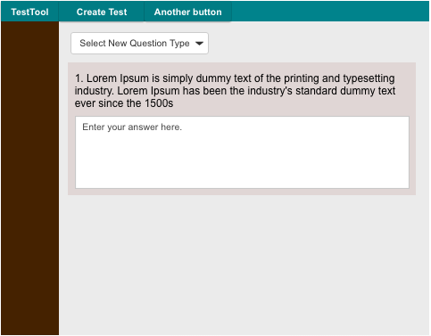

2.3.1. Creating New Exams
To create a new exam, the user can click the 'Create New Test' button
that is on the 'View Exams' screen.
The Figure x is the screen that allows the user to add additional
questions to a new exam. Clicking on the drop down menu will show a
list of questions types. Selecting a new question type will show
additional options relating to the corresponding question type.

Figure x: Add Questions
Prev: [none] | Next:
list-viewing | Up: browsing | Top: index